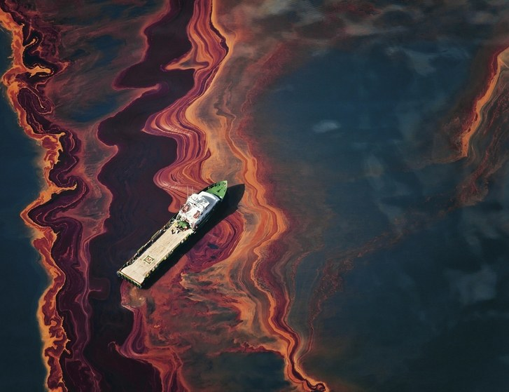

Sea Shepherd is well-known for its ongoing campaigns against the dolphin hunts of Taiji, and for chasing Japanese whalers out of whale sanctuaries. Other recent campaigns include halting poaching in Guatemala, collaborating with rapper Pharrell Williams on a new sustainable fashion line, and advocating a ban of the West Australian shark cull.
Founded in 1977, their mission is to "end the destruction of habitat and the slaughter of wildlife in the world's oceans in order to conserve and protect ecosystems and species," using direct-action tactics.
Oceanic Preservation Society
The Oceanic Preservation Society, founded in 2005 by photographer and diving enthusiast Louie Psihoyos, were responsible for creating the award-winning 2009 documentary, "The Cove," which opened people's eyes to the horrors of the annual Taiji dolphin hunt.
Other OPS initiatives include "Undersea Majesty," a stunning series of photographs taken in Raja Ampat, Indonesia, a collection of children's sea art, and an online campaign inviting members of the public to pledge that they will never to go to dolphin shows.
Ric O'Barry's Dolphin Project
The Dolphin Project was founded by Ric O'Barry in 1982 as an offshoot of the Earth Island Institute. O'Barry, a former captive dolphin trainer, claims that his life was irrevocably changed when Kathy, one of the dolphins he had been working with on the set of the movie "Flipper," died in his arms. This caused him to realize that "capturing dolphins and training them to perform silly tricks is simply wrong."
Some of the Dolphin Project's many oceanic conservation initiatives include campaigning against Japan's cruel cetacean hunts and halting the Solomon Islands dolphin trade (largely composed of traumatized survivors of the Islands' annual dolphin hunt.) As part of these campaigns, they are running an online petition to help stop the Taiji dolphin slaughter, and another one asking members of the public to pledge that they will never attend a dolphin show.
Recent Projects

We were at the fore front of the bp oil spill clean up efforts and continue to work to this day decontaminating the gulf and surrounding areas.
The Gulf has made progress in its recovery. Many short-lived species seem to be bouncing back, says Larry McKinney, executive director of the Harte Research Institute for Gulf of Mexico Studies at Texas A&M University.
But beneath the surface, there's still healing left to do: "For those long-lived things like turtles and sperm whales and dolphins ... they're still in the middle of this," he says. "And we may not know for another 30 or 40 years where the impacts are."
We have a growing fleet of plastic trawlers in the pacific and atlantic oceans.
Plastic debris in the ocean is an emerging global environmental issue, with densities up to 580,000 pieces per square kilometer documented and high concentrations found along the coastal margins near plastic sources and in convergence zones. Global plastic production is increasing exponentially, doubling roughly every 11 years. Over the next ten years, humans will make as much plastic as the entire amount manufactured from the 1950s through 2016.
Although plastics originating from land-based sources make up most of the marine debris in the oceans, there are some sea-based types of plastic debris that can have significant impacts on marine habitats. Waste Free Oceans (WFO), a foundation based in Belgium, has developed a creative answer to the issue. Using "trash catchers" that can be attached to fishing boats, WFO's partners collect ocean plastic floating on the water's surface and then transform the collected waste into new products.
Our Florida based marine breeding and reintroduction program is one of the most successful in the country.
We began working closely with Florida Fish and Wildlife Conservation Commission (FWC) in the 1980s to develop technology to culture common snook (Centropomis undecimalis). We initially focused on catching wild snook during the spawning season and then transferring them to tanks at our City Island facility. These fish were induced to spawn soon after capture and researchers collected the fertilized eggs. This approach led to limited larval survival and in 1996 we began collecting and fertilizing eggs from wild, naturally spawning fish in Sarasota Bay. This strategy was more successful and provided good quality eggs for larval growth and production studies for stock enhancement.